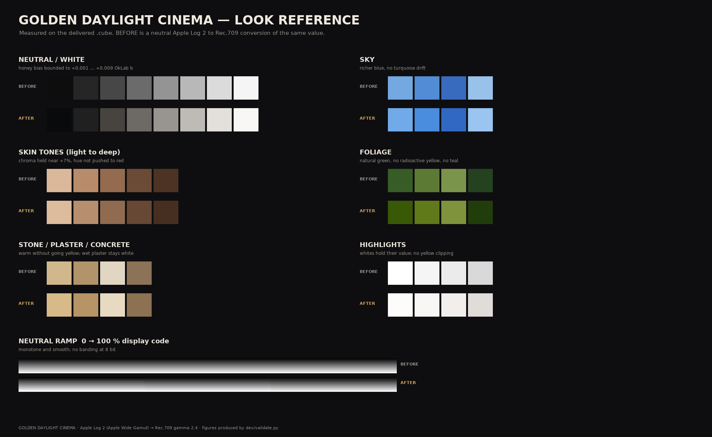

Contact sheet
All eight scenes, before and after, on one page — plus a reference chart of the measured behaviour on neutral, skin, sky, foliage, stone and highlight patches.

Tap the sheet to open it full size.


Apple Log 2 · iPhone 17 Pro · Rec.709
One standalone 3D LUT that turns harsh midday Apple Log 2 footage into warm, dimensional, filmic colour — honey light on stone and skin that stays skin, deep shadows that keep their detail, and a sky that is still blue at the end.
Every pair is the same frame, the same composition and the same exposure.
Drag the divider — or tap anywhere on the frame — to move between the neutral
technical conversion and the graded frame, rendered with the delivered
.cube itself.
Built as one continuous transform: decode Apple Log 2 in Apple Wide Gamut, matrix to Rec.709, then a filmic lightness curve and a perceptual colour build in OkLab, then gamma 2.4. Nothing here is a warm overlay.
All eight scenes, before and after, on one page — plus a reference chart of the measured behaviour on neutral, skin, sky, foliage, stone and highlight patches.
Tap the sheet to open it full size.

The LUT is a single file. In Blackmagic Camera for iOS, open the LUT
browser, import GOLDEN_DAYLIGHT_CINEMA.cube from Files, and select it as the
display LUT while recording Apple Log 2.